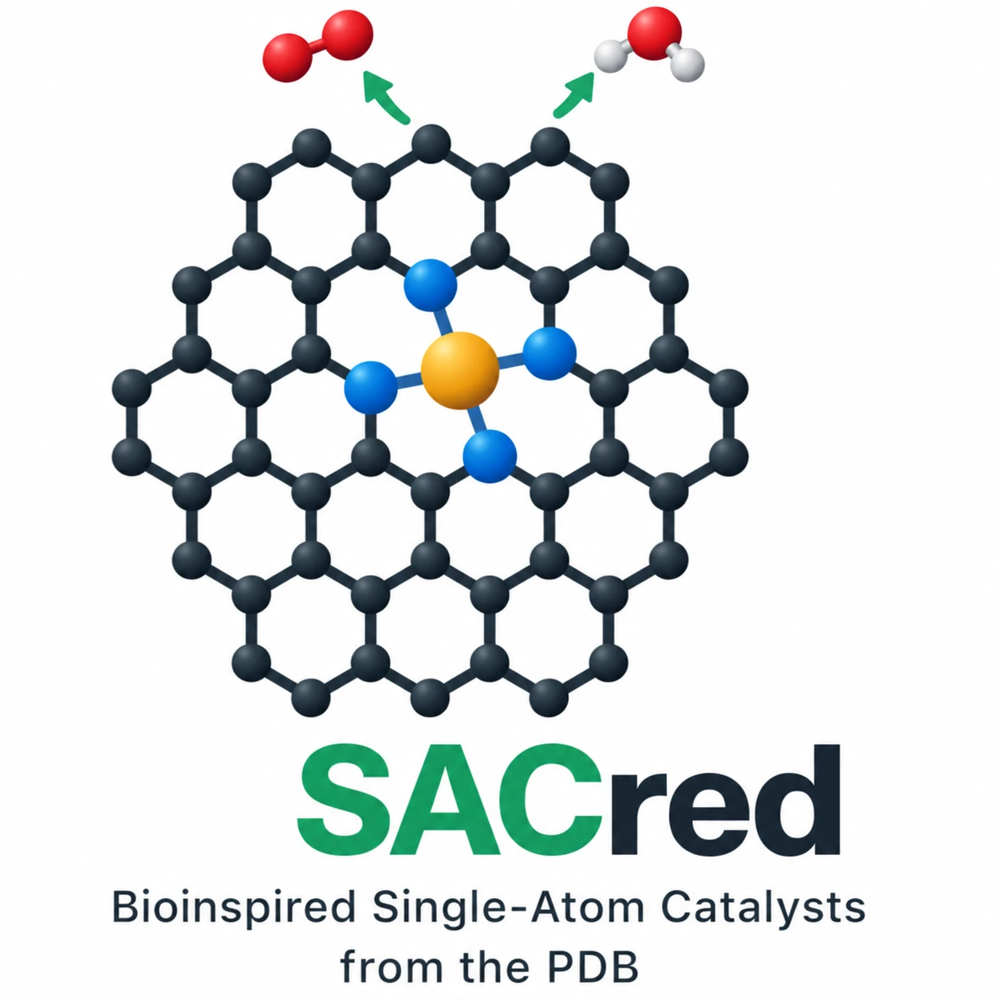
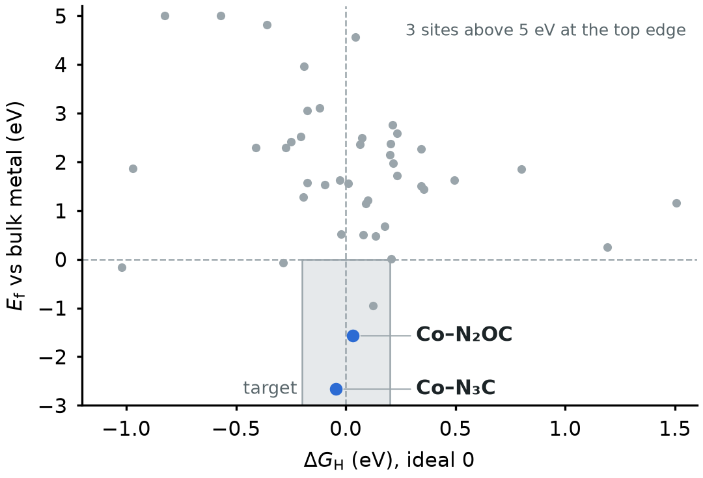

SACred: turning enzyme active sites into usable single-atom catalysts
Hackathon submission · 22 October 2026 · Team: [names] · data and code: Zenodo package v0.4, repository [link]
What we built
An automated pipeline from every metal site in the Protein Data Bank to ranked single-atom catalyst (SAC) candidates, tested for activity and for survival in synthesis.
- Sweep: 291,977 metal sites from 53,940 PDB entries, reduced to first coordination shells (94–98 % agreement with the PDB's own metal-link annotation).
- Mapping: each shell rebuilt as a site in a graphene vacancy, with examples on MoS2 and silica.
- Funnel: GFN2-xTB for 1,155 sites, DFT for the best 71, judged by descriptors for activity (ΔGH; O2, CO2, N2 steps) and for synthesis (formation energy, dissolution, pyrolysis escape barrier, acid demetalation).
- Products: an open database (Zenodo), an interactive explorer with a 3D enzyme-to-catalyst zoom and an SQL chat agent, and about 10,000 DFT frames for force fields.
Results
Of 71 sites computed in DFT, 24 bind hydrogen within 0.2 eV of the optimum, but only two cobalt sites also keep their metal.

Hydrogen binding (ΔGH) against formation energy (Ef) for 45 DFT sites; grey box: target region, blue: the two sites that pass.
- Stability is the bottleneck: 41 of 46 sites would rather form metal particles; N and C donors hold the metal, S and O let it go.
- Candidates: Co–N2OC (ΔGH +0.03 eV, Ef −1.57 eV, escape barrier 6.0 eV, enough to survive pyrolysis at 1000 °C; no earlier report) and Co–N3C (−0.05 eV, −2.67 eV). Our own checks show the limits: under H2 evolution the C donor of Co–N2OC takes up H (−0.02 eV), which weakens H on Co to +0.61 eV, and in acid protons would replace the Co.
- Validation: our DFT reproduces the published O2-reduction potential of Co–N4 (0.93 V); calibrated xTB predicts ΔGH on Fe, Co, Ni, Cu and Zn to about 0.4 eV; the screen independently finds Ni–N3, which has been made for H2 evolution.
- Dynamics: MD with a MACE force field fine-tuned on our DFT frames confirms the barriers: at 1500 K Zn–NS2 loses its donors within 0.15 ps, Co–N2OC keeps all four over 5 ps.
What we used
RCSB PDB (gemmi); GFN2-xTB (tblite, ASE); Quantum ESPRESSO (PBE-D3) on the FU Berlin Curta cluster; Modal GPUs; Valency for literature screening (reported SACs, benchmark data, known synthesis problems); marimo apps, DuckDB and 3Dmol.js for the explorer.
How we used AI
Claude was our research partner throughout; we set the questions, made the scientific decisions and checked the results.
- Claude Opus 5.5 in Claude Code: wrote and ran the pipeline (PDB parsing, structure builders, xTB and DFT inputs, analysis, database), submitted and monitored more than 230 DFT runs on the HPC cluster, and built the explorer, website and reports.
- Literature agents on Valency: about 100 agent runs in six rounds; Claude Haiku 5.5 and 4.5 triage titles, Claude Sonnet 5.5 judges abstracts and tries to refute novelty claims, Claude Opus 5.5 reads the flagged papers in full.
- Chat agent: Claude Opus 5.5 answers questions about the database with read-only SQL.
- Machine-learned force field: the MACE-MP-0 foundation model (small), fine-tuned on our ~9,400 DFT frames on Modal GPUs, for MD at 1500 K.
Future directions
- Scale: all 29 transition metals (2,784 sites, about a day of compute); the pipeline reruns with every PDB release.
- Realism: the enzyme's second coordination sphere with the force field; stability under pH and potential, and against small clusters and metal sulfides or oxides.
- Synthesis: Co–N2OC first, with experimental partners; a stability model for mixed N/S/O/C shells trained on the open dataset.